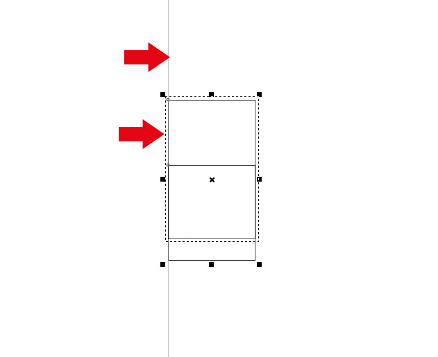

Ошибки в CorelDRAW x7
Des425 / 28.03.2014, 20:19
Форум:
Версия программы:
17.0.0.491
Ну теперь можно и о новых багах поговорить.
Со шрифтами пока не фсё гладко, то работает визуальное отображение то нет.
Ну теперь можно и о новых багах поговорить.
Со шрифтами пока не фсё гладко, то работает визуальное отображение то нет.
Не знаю, может это нельзя назвать ошибкой, поставил Х7, начал настраивать. Никак не могу вспомнить какую галку надо поставить/убрать чтобы не отображалась граница при выравнивании + выравнивающая линия? (см. рис.)
* в Х6 как-то сделал, но было давно, поэтому не помню. мб импортнул профиль от Х5 и оно исчезло. В Х7 хоть убей явно не вижу в настройках где эту фигню отключить.

Отвечаю сам же на свой вопрос. Похоже это действительно баг. В Х6 есть параметр в настройках Alignment Guides. В Х7 этот параметр перенесли в меню View. Однако снятие галочки ничего не дает.
katoriy,
Подтверждаю. Оттенки плашечных цветов палитры Pantone после сохранения файла перекрашиваются в 100%-ю заливку. Может, нужно создавать новую пользовательскую палитру из библиотек Х7 палитр Pantone, как это было и в Х6 версии (перекрашивалось все в какой-то, не помню черный)
win 8.1 x64
corel 7x64
незапоминает путь последнего экспорта настроек рабочего пространства
упс, что-то я лоханулся) казалось что х5 и х6 запоминали пути, но как оказалось нет)
В результате несовместимости рабочих пространств X6-X7 (даже хоткеи нельзя импортировать), пришлось назначать кучу горячих клавиш (у меня почти на каждую кнопку свой хоткей) и вот какие нашел баги в процессе:
1) не работает вызов окон ввода с помощью хоткеев. Раньше, можно было с помощью горячих клавиш вызвать например окошко трансформации объекта, которое привязывалось к курсору, а теперь вызов не работает. И так со всеми окнами ввода: трансформации, масштабирования, вращения и т.д. Если это вызвано новым интерфейсом, то я дико огорчен, потому что это в разы снижает скорость работы. Скорее всего баг т.к. возможность вызова этих окон все еще существует в списке команд.
2) например я захотел назначить горячую клавишу на инструмент "Прямоугольник". Перехожу в "Настройки/команды" и чтобы не искать этот пункт в списке, я тыкаю по кнопке "Прямоугольник" в интерфейсе корела и тогда автоматически находится пункт "Прямоугольник" в списке "Команд". Так вот, когда я снова перехожу в окно "настроек" чтобы назначить хоткей, то выделение "Прямоугольника" в списоке "Команд" почему-то сбрасывается и мне приходится его искать заново.
3) Тут я подумал, а почему бы не создать макрос, чтобы решить пункт №1, и нашел еще одну странную вещь: кто нибудь пытался писать в редакторе макросов кириллицей? Вот как выглядит слово "бейсик" - 159 A8:. Что это такое? Если вставлять с помощью ctrl+c/ctrl+v , то все отображается корректно, надписи в старых макроса тоже не искажаются — проблемы с набором нового текста. Запускаю X6 и там в редакторе макросов тоже все хорошо с кириллицей.
4) Если у вас библиотека из десятков палитр, то в меню выбора палитр(чтобы вытащить палитру на рабочий стол), часть из них скрывается под кнопкой дополнительно. Так вот, из этого меню "дополнительно" не вызываются палитры. Пробовал добавлять палитры с помощью "открыть" — в результате палитра добавляется, но при перезагрузке корела остается пустое окно без плашек.
Еще два косяка:
- Фигурный текст не разъединяется (Ctrl + K)
- В режиме редактирования фигурного текста, нельзя перейти к другому инструменту с помощью горячей клавиши.
еще пару:
1) если переключится из другого окна, то при нажатии ESC не происходит снятие фокуса с текущего объекта
2) окно (не в режиме докера, а когда оно отдельно на экране) align and distribute при вызове по горячей клавише «плавает» по экрану - закрыл/открыл - оно открывается не на том месте где закрыл, а в другом. как правило съезжает вверх, но может и прыгнуть в другое место, еще и размер свой изменить.
win 8.1x64, corel x64
2 Alexander_A.L
у меня это работает (ctrl-k и хоткеи из редактирования текста). с клавишами попробовал F6 - срабатывает. не срабатывает если например shift-A - тогда просто с другим регистром букву вставляет, оно-то и понятно.
и да - при назначении клавиш (при переключении на закладку с гор. клавишей) курсор соскакивает с того пункта который был выбран, приходится заново его искать в списке.
Кто сталкивался с таким?
Два монитора. На одном при полном развертывании все ок. встает в края. на втором правая часть убегает за пределы экрана. на скрине показал как вручную выставлен и как после развертывания
Win 7 64-Bit
CorelDRAW X7 64-Bit
В режиме Print Preview не отображаются Tooltips (Подсказки) для элементов управления.
Страницы